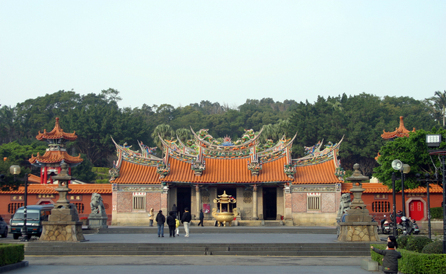
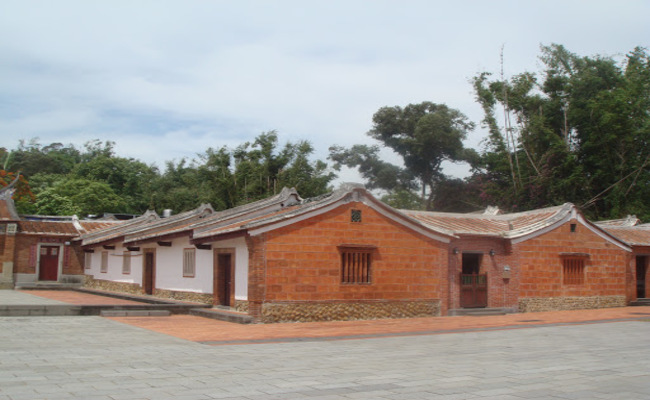
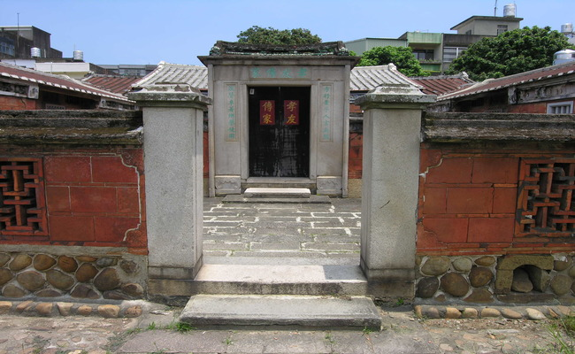
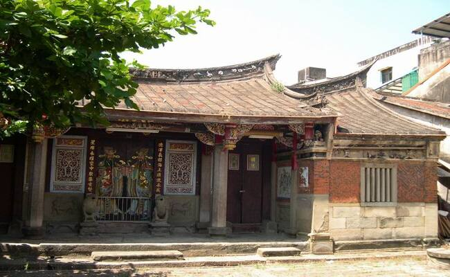
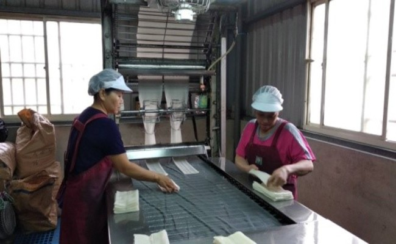
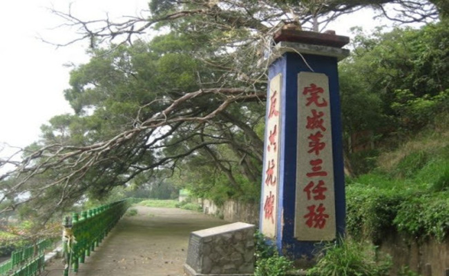
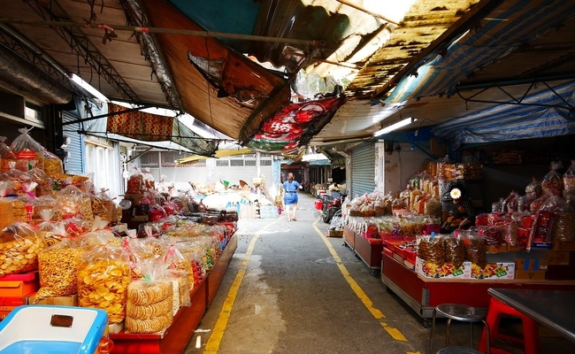
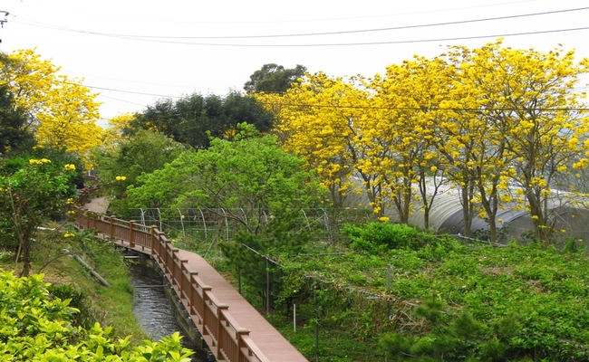

客庄文化休閒觀光導覽
報名由此去
一、六家水圳園區導覽
二、新埔小鎮文化導覽
三、關西小鎮文化導覽
四、大隘地區文化導覽
五、竹東客庄文化導覽
新埔小鎮文化導覽
義民廟

西河堂(菸店)

歷史沿革
新埔西河堂於明 治31年（1898年）前已落戶於新埔舊庄（下枋寮） 現址，昭和3年（1928年）因地震曾重修改建。初 遷該地經營煙店營生，左橫屋留有昭和6年（1931 年）至昭和11年（1936年）由六大房後人林代保落墨書法勸世，為區域發展沿革重要見證。
建築描述
正堂正面牆體於日治 時期將土埆構造改為清水磚砌，大廳兩側仍維持卵 石基座上方斗砌與土墼混合之構造，牆體呈現出豐富的構造樣式。木構架、細木作、彩繪、泥塑與剪 黏等均相當細膩精緻。正堂正脊剪黏泥塑 「吉星閣」脊飾特殊，意欲庇蔭後代子孫。內埕圍牆之神龕、古井、爐灶與煙囪等完整保留傳統構造，皆為新竹地區客家形式，可感知早期客家生活方式。
是否開放
否
雙堂屋

劉家祠
歷史沿革
在新埔墾拓族群中以蔡、陳、潘、朱、劉、郭等六姓為主，其中劉姓族人約在乾隆初年來到此地開展墾拓事業，清同治三年(西元1864年)，首先倡議興建家祠者，為廣東省潮洲府饒平縣石井鄉開基祖劉谷祥派下第十五世劉潮源及第十七世劉世和，由新埔街劉榮光捐地，新埔街劉松茂、劉萬湧，大旱坑莊劉廷章，新芎田劉家玩等分五股出資，並由劉世和主持工程。新埔劉家祠奉祀劉家共同始祖漢高祖劉邦的祖父劉榮及歷代始太高曾祖神位，目前是由劉榮公、劉榮公嘗、劉丁子嘗、劉家祠、垂裕嘗等祭祀公業組成。這種藉同宗與同籍的地緣關係而組成的祭祀團體，是早期移民社會的典型之一，同時也反映出客家移民在移墾初期為求生存與防禦的目的。
建築描述
在建築構造上，劉家祠之基礎多以石材鋪設，象徵家業穩固，牆體大多以土埆牆為主，惟正面部分以磚疊砌，其中橫屋之牆面間又以黑牆構築，而橫屋之山牆面為斗子砌牆，獨具風味。宗祠的屋頂部份以黑色板瓦疊砌，屋脊翹鵝線條優美，橫屋之屋脊與馬背(棟頭)並存，是劉家祠的特色之一，因此有「燕尾多」之稱。劉家祠的大木作及小木的雕刻均極為精彩，特別是正身步口廊之木構架部份，不論瓜筒、通隨、束仔及出檐斗拱等極具藝術價值，其中又以吊筒之蓮花雕刻及倒趴獅豎材更具匠藝。
是否開放
星期二~星期六，9:00~16:00開放
潘宅

廣和宮
歷史沿革
新竹縣新埔鎮廣和宮，又稱王爺宮，供奉三山國王為主神，新埔潘家的先祖潘庶賢為乾隆51年（西元1786年）自廣東嘉應州渡海來臺,建立此廟已有233年之歷史，三山國王神靈顯赫，香火鼎盛，為新埔鎮地區之信仰中心，也是地方政治活動及各項演訓之場所。
建築描述
廣和宮最大的特色為在建築上「對場作」，這與屏東縣萬丹鄉的萬惠宮相同，就是以中軸線為界，左右木雕分別由兩組師傅施工，所以左右兩邊的吊筒、雀替、獅座都不太一樣，因出自不同師傅之手。自大門上方的吊筒、鳳凰雀替，到通梁下的獅座，及正殿吊筒垂花，都各自展現出雕刻師當年競技的情況
其他敘述
無
陳氏宗祠

義順冰店
歷史沿革
義順冰店位於成功街，創於日治末期，第一代主人陳海濱當年在現址開雜貨店，店內販賣的黑糖，因缺乏保存設備容易受潮，主人靈機一動，將受潮的黑糖用來製冰，結果銷路奇佳，於是展開了陳家的製冰事業，現在的主人陳智弘已經是第三代了。
建築描述
待補
營業時間
上午6：00至下午6：00，假日至晚上9：00
新埔板條工廠

義勇廟
歷史沿革
林爽文之亂時，新埔居民組義民軍攻打大嵙崁(今大溪)，以防止閩人南助林爽文，當初戰死者以牛車運回新埔，行經此地時(此地原有一亂葬崗)，因車困牛乏，即於此草草掩埋葬於今廟前。道光年間聚葬成一大塚名為義民爺墓，光緒二年改建為「集義亭」，民國63年重建為「義勇廟」，並將塚遷於廟後方。
建築描述
義勇廟的裝飾相當樸素，牆壁上的石雕幾乎僅使用簡單的色彩勾邊，與其他廟宇的金碧輝煌大不相同。
其他資訊
無
怒潮軍校紀念碑

宗祠博物館
歷史沿革
新埔宗祠博物館的形成，有別於一般傳統博物館的概念，他沒有特定的建築物，而是以具有歷史意涵客家祭祖所在的宗祠、家廟為核心，並從核心所衍生出的客家歷史、文化、生活、環境變遷等，層層脈絡發展下的歷史、空間、人與文物來做為博物館的內涵。簡單而言，宗祠博物館的硬體是由不同單點的宗祠、家廟所構成，是一個從點到點串聯成線，進而成面的空間區域。在這個區域裡，不同單點宗祠、家廟的空間、曾經歷過的年代與歷史、建築樣式與工法、祭祀禮儀、生活用品、生活故事或人在生活中的食、衣、住、行、育、樂點滴，即為博物館典藏與展示的主要範疇。
建築描述
待補
其他資訊
無
新埔傳統市場

吳濁流故居
歷史沿革
吳濁流，本名吳建田，詩人、小說家，《台灣文藝》及「吳濁流文學獎基金會」創辦人，文學運動家。1900年出生於新竹新埔，1976年病逝。吳氏原為公學校教師，嘗從事漢詩寫作，37歲時，偶然受女同事刺激，始作小說〈水月〉發表於《台灣新文學》，接著又以〈泥沼中的金鯉魚〉獲獎，開啟他小說寫作的興趣。 吳濁流直到去世時，仍然以日文為主要創作工具，他辛苦創辦《台灣文藝》，完全是站在推展台灣文學的立場。他一生寫了三千首以上的漢詩，但他並不固執己見，從善如流改設「新詩獎」，不論是辦雜誌或設獎，在那白色恐怖籠罩的時代，都是為台灣文學的生存而做的戰鬥行為，都是為台灣文學存續所做的重大貢獻。
建築描述
位於新埔大茅埔地區的「至德堂」，即是吳濁流先生的故居，他在此度過年輕的歲月，也為吳家的發展做出許多貢獻。至德堂為吳家公廳，整體建築規模為一堂三橫屋，目前保存完整，對吳濁流家族具有重要的意義。故於2009年登錄為新竹縣歷史建築，這也是新竹縣唯一不冠地名的歷史建築。
其他資訊
待補充
巨埔農場
